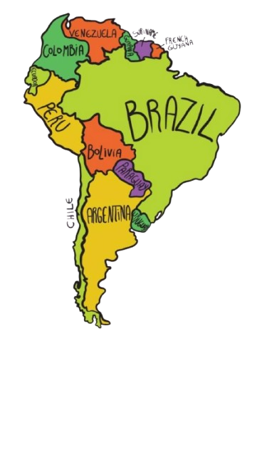
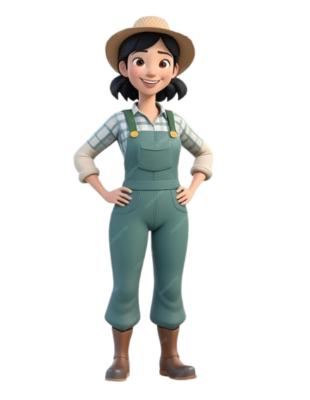
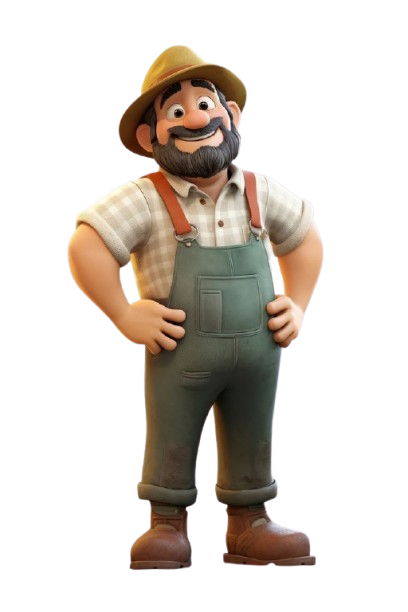
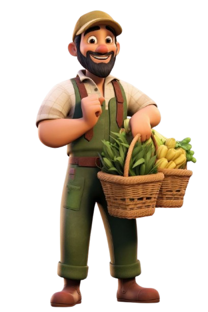

NASA Agroclimatology & Farm Resilience Planner

SELECT YOUR FARM REGION
You selected Brazil! Click Continue to run a live NASA satellite scan of your agricultural region.
NASA FARM SCAN

FARM SCAN: BRAZIL
• Root-Zone Soil Moisture: 73% (NASA POWER)
• Rainfall Anomaly: +40% (NASA POWER)
• Vegetation Stress: 62% (illustrative)
* Fetching live NASA POWER (MERRA-2) agroclimatology telemetry...
Let's scan your farm! Live NASA POWER agroclimatology data measures root-zone soil wetness (GWETROOT) and precipitation anomalies (PRECTOTCORR).
CONTINENTAL MOISTURE JOURNEY
Stage 1: Upwind Amazon forests release massive volumes of water vapor into the atmosphere.
ADAPT YOUR FARM
⚠️ Drought Warning: Low rainfall forecast in Brazil. Choose crops that need less water.

RECOMMENDED
🌾
Sorghum
💧 -45% Water
🛡️ 92% Resilience
TOP WATER SAVER
🌿
Millet
💧 -60% Water
🛡️ 95% Resilience
SOIL BOOSTER
Cowpea
💧 -50% Water
🛡️ 88% Resilience
HIGH RISK
🌱
Soybean
💧 High Water
⚠️ 32% Resilience
🧺 Vegetable Basket Recommendation
Grain Sorghum is a great choice! Its deep roots tap into underground moisture, saving 45% water while keeping your harvest strong.
SMART WATER PLAN — IRRIGATION CONTROL
🌱 Plot Crop: Grain Sorghum
💧 Water Saved: -50%
⚡ ACTIVE MACHINE
Smart Drip Unit
Sub-surface emitters deliver water directly to roots.
💧 Saves 50% Water
CLICK TO ACTIVATE
Rotary Sprinkler Rig
Low-pressure overhead mist cools foliage canopy.
💦 Saves 30% Water
🌟 Great Job, Farmer!
Your farm is ready for a smarter and more sustainable future.
📍 Brazil
🌱 Crop: Grain Sorghum
💧 Irrigation: Smart Drip
📉 Water Saved: ~65%
SCREEN: